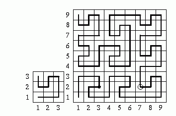
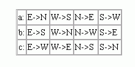

在一幢豪华的公寓中，有一块面积巨大的正方形大厅。这个大厅的地板被分成了3k×3k个格子，每个格子上都被铺了一块与格子面积大小一致的瓷砖，如此的布置使得整个大厅显得更加的气派。遗憾的是，地板上有一块瓷砖因为损坏而被移走了，这就留下了一个洞。
为了方便的表示这个洞的位置，我们将大厅的地板置于一个平面直角坐标系中，最西南方的格子的坐标为(1,1)，往东是X轴的正方向，往北是Y轴的正方向。
一个梦游者正在这个大厅里游荡。梦游者从西南方(1,1)出发，每次可以往四周的方向（东E、南S、西W、北N）移动，要走便所有的格子而不重复。他的行动路线十分怪异，例如k=1，即地板是3×3规模时，他的行走路线为：D1=EENNWSWN；当k=2时，地板是9×9规模，他的行走路线D2=NNEESWSEENNEESWSEEEENNWSWNNEENNWSWNNEENNWSWNWWWSSENESSSSWWNENWWSSWWNENWNEENNWSWN。
直观的将路线画在图上如下图：

总的来说，当地板规模是3k+1×3k+1时，梦游者的路径为
Dk+1 = a(Dk) E a(Dk) E Dk N Dk N Dk W c(Dk) S b(Dk) W b(Dk) N Dk
其中，a()，b()，c()均表示一种字母置换，具体如下：

例如，a(SEN)=WNE, b(SEN)=ESW, c(SEN)=NWS
现在，梦游者正站在坐标为(x1,y1)的地板上，而没有因为瓷砖损坏造成了一个洞的地板坐标为(x2,y2)。你能求出可怜的梦游者将在第几步后跌入洞中么？